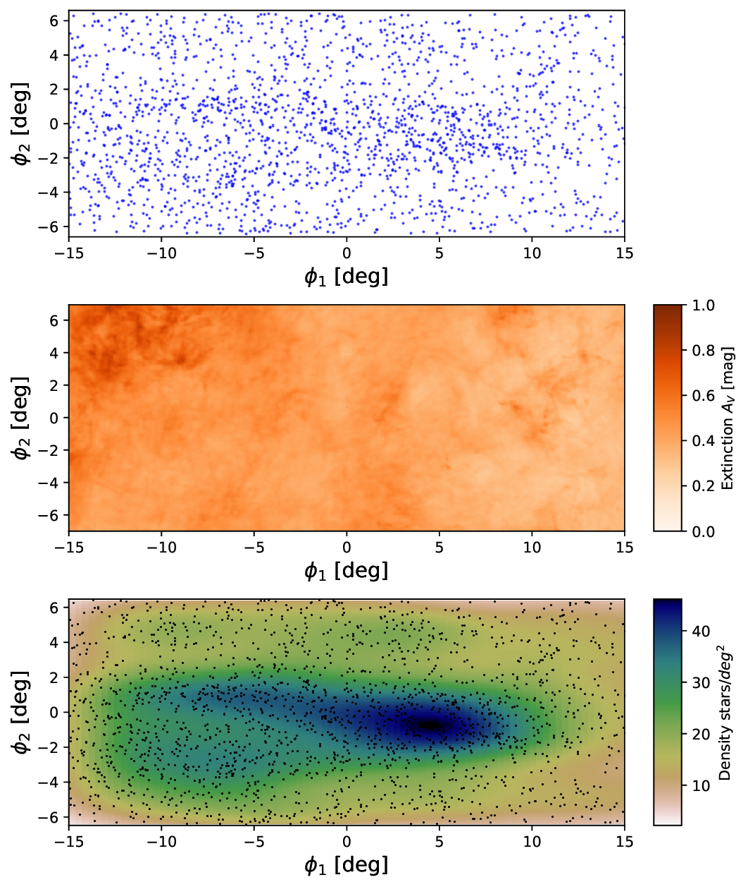

Astronomy Ph.D. Student · University of Washington
ARCS Foundation ScholarHello! I am a first year Astronomy graduate student at the University of Washington currently working with Dr. Nora Shipp. I am fascinated by dark matter, and my work seeks to use both observations and simulations to understand its nature at small scales. Currently, I am leveraging stellar streams and machine learning techniques to constrain the properties of dark subhalos.
I am originally from Connecticut and earned my B.A. in Physics from Dartmouth College in 2025. Outside of research, I enjoy hiking, skiing, and spending time outdoors, and I have loved exploring the Pacific Northwest since moving to Seattle.
Stellar streams are promising probes for detecting dark matter subhalos in the Milky Way — but how do we go from stream structure to constraints on a perturber? Simulation-based inference (SBI) bypasses the need for an analytic likelihood, instead learning the relationship between stream morphology and subhalo properties (mass, radius, velocity, impact geometry) directly from simulations. Building on successful applications to mock streams (Nguyen+ 2026), we are applying SBI to real data for the first time using the Atlas-Aliqa Uma stream, which features deep DES photometry and a well-studied kinematic perturbation. We ultimately aim to extend this framework to a population of Milky Way streams to characterize global trends in dark subhalo perturbations.
Ylgr is a recently discovered stellar stream with unusually complex morphology — varying width and possible off-track features that smooth, unperturbed models fail to reproduce. Using StreamSculptor, we find that models incorporating an external perturbation significantly better reconstruct Ylgr's structure, providing evidence for a dark subhalo encounter during the stream's evolution.

Feel free to reach out about research, collaborations, or anything else.